Operational Amplifiers in Instrumentation
Instruments 2.2
Imron Rosyadi
Learning Objectives
By the end of this session, you should be able to:
- Describe the ideal op amp model and use the two “golden rules” for circuit analysis.
- Analyze and design basic op amp configurations:
- Inverting and noninverting amplifiers
- Summing amplifiers and voltage followers
- Explain nonideal op amp parameters (offsets, slew rate, bandwidth) and when they matter.
- Understand and design basic instrumentation circuits:
- Differential / instrumentation amplifiers
- Voltage‑to‑current and current‑to‑voltage converters
- Implement simple integrating and differentiating op amp circuits.
- Apply a structured design process to real signal‑conditioning problems.
Why Op Amps in Instrumentation?
- Process control and measurement systems need:
- Amplification and attenuation
- Impedance matching
- Level shifting (offsets)
- Filtering and linearization
- Voltage ↔︎ current conversion
- Historically: built from tubes, then discrete transistors
- Today: integrated‑circuit (IC) implementations dominate
- Small size
- Low power
- Low cost
- Consistent and well‑documented behavior
Tip
Think of an op amp as a universal analog building block you configure with a few external resistors and capacitors to implement many different transfer functions.
4.1 Op Amp Characteristics – The Black‑Box View
Symbol
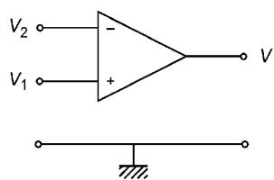
- Two inputs:
+noninverting−inverting
- One output
- Power pins (\(+V_s\), \(-V_s\)) typically not drawn on signal schematics
Transfer Behavior
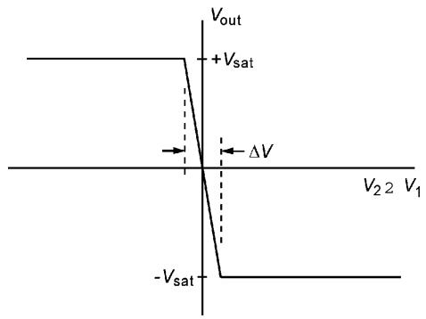
- Output vs. differential input \(V_d = V_2 - V_1\)
- Large voltage gain in linear region
- Saturates at \(\pm V_{\text{sat}}\) set by supply rails
Ideal Op Amp – Key Properties
- Infinite open‑loop gain \(A\)
- In linear region \(V_{\text{out}} = A \,(V_+ - V_-)\)
- Practically \(A \gg 10^5\) even at low frequency
- Infinite input impedance
- No current flows into \(V_+\) or \(V_-\)
- Zero output impedance
- Output acts as an ideal voltage source
- Infinite bandwidth, zero noise, no offsets (in the ideal model)
These properties lead to two powerful analysis rules when negative feedback is used.
Important
Golden Rules for Ideal Op Amps (with negative feedback):
- No current flows into the input terminals: \(I_+ = I_- = 0\).
- The inputs are at the same voltage: \(V_+ = V_-\).
Visualizing Op Amp Saturation
- If the differential input is more than a few hundred µV, the output hits \(\pm V_{\text{sat}}\).
- Only a very narrow band around \(V_+ \approx V_-\) is linear.
Ideal Inverting Amplifier – Circuit
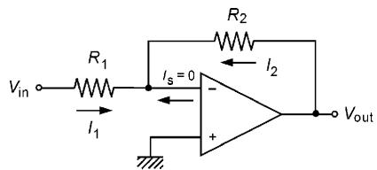
- Input \(V_{\text{in}}\) through \(R_1\) to the inverting (−) input
- Feedback resistor \(R_2\) from output to inverting node
- Noninverting (+) input connected to ground
- The inverting node is called the summing point or virtual ground
Ideal Inverting Amplifier – Derivation
At the summing node (inverting input), apply KCL and the two golden rules.
- Rule 1: No current into input → sum of resistor currents is zero.
- Rule 2: \(V_- = V_+ = 0\) V (since \(V_+ = 0\)).
Currents:
- Through \(R_1\): \(I_1 = \dfrac{V_{\text{in}} - 0}{R_1} = \dfrac{V_{\text{in}}}{R_1}\)
- Through \(R_2\): \(I_2 = \dfrac{V_{\text{out}} - 0}{R_2} = \dfrac{V_{\text{out}}}{R_2}\)
KCL:
\[ I_1 + I_2 = 0 \tag{29} \]
Substitute:
\[ \frac{V_{\text{in}}}{R_1} + \frac{V_{\text{out}}}{R_2} = 0 \tag{30} \]
Solve for \(V_{\text{out}}\):
\[ V_{\text{out}} = -\frac{R_2}{R_1} V_{\text{in}} \tag{31} \]
- Gain magnitude: \(\left|\dfrac{V_{\text{out}}}{V_{\text{in}}}\right| = \dfrac{R_2}{R_1}\)
- 180° phase inversion (sign change)
Note
The input impedance seen by \(V_{\text{in}}\) is approximately \(R_1\).
Interactive: Inverting Amplifier Gain Explorer
Nonideal Effects – Real Op Amp Behavior
Nonideal I/O characteristic
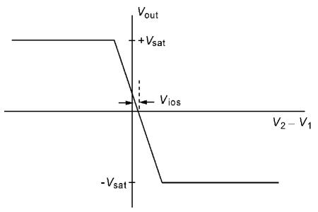
- Finite slope → finite open‑loop gain \(A\)
- \(V_{\text{out}}\) saturates at \(\pm V_{\text{sat}}\)
- Input offset voltage \(V_{\text{ios}}\) shifts the curve
Nonideal inverting amplifier model
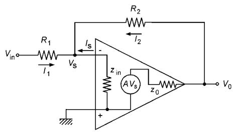
- Finite input impedance \(z_{\text{in}}\)
- Nonzero output impedance \(z_0\)
- Finite gain \(A\)
Key definitions:
- Open‑loop gain: \[ A = \left|\frac{\Delta V_{\text{out}}}{\Delta(V_2 - V_1)}\right| \approx \left|\frac{2 V_{\text{sat}}}{\Delta V}\right| \]
- Typical values:
- \(V_{\text{sat}} \approx 10\) V
- \(\Delta V \approx 100\,\mu\)V → \(A \approx 200{,}000\)
Nonideal Inverting Amplifier – Impact on Gain
Using the nonideal model (Figure 27b), we can derive:
\[ V_0 = -\frac{R_2}{R_1}\left(\frac{1}{1 - \mu}\right) V_{\text{in}} \tag{32} \]
where
\[ \mu = \frac{\left(1 + \frac{z_0}{R_2}\right)\left(1 + \frac{R_2}{R_1} + \frac{R_2}{z_{\text{in}}}\right)}{A + \frac{z_0}{R_2}} \tag{33} \]
If \(\mu \ll 1\), the gain reduces to the ideal form:
\[ V_0 \approx -\frac{R_2}{R_1} V_{\text{in}} \tag{31 revisited} \]
Example parameter values:
- \(A = 200{,}000\)
- \(z_0 = 75\,\Omega\)
- \(z_{\text{in}} = 2\,\text{M}\Omega\)
- Gain \(R_2/R_1 = 100\), with \(R_2 = 100\,\text{k}\Omega\)
Then
- \(\mu \approx 0.0005\)
- Error in gain ≈ \(0.05\%\)
Tip
For most low‑frequency instrumentation designs, ideal op amp analysis is accurate enough, and we ignore \(\mu\) unless we push bandwidth or precision limits.
4.2 Practical Op Amp Specifications
Important datasheet parameters beyond gain and impedances:
- Input offset voltage \(V_{\text{ios}}\)
- Voltage that must be applied between inputs to drive \(V_{\text{out}}\) to zero.
- Input offset current
- Difference between the two input bias currents that must flow to get \(V_{\text{out}} = 0\).
- Input bias current
- Average of the two input currents at zero output.
- Slew rate (V/µs)
- Maximum rate of change of the output voltage for a step input.
- Unity‑gain frequency (gain‑bandwidth product)
- Frequency where open‑loop gain drops to 1 (0 dB).
Warning
Offset voltages/currents matter most in:
- Low‑level signals (mV, µV)
- High‑gain DC amplifiers
- Precision instrumentation (e.g., strain gauges, biomedical signals)
Practical Circuit: Op Amp with Power and Offset Trim
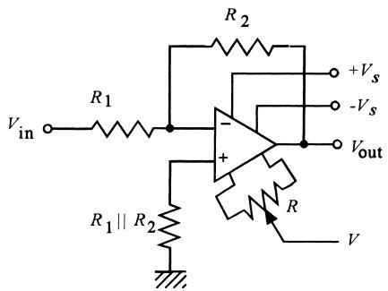
Key practical details:
- Bipolar supply: \(+V_s\) and \(-V_s\) (often ±12 V, ±15 V, etc.)
- Optional offset trim pins to null input offset voltage using a trimmer resistor
- Resistor at the noninverting input chosen to match effective resistance at inverting input to partially cancel input bias current errors
“Think mA and kΩ” – Output Current Limits
Op amps have limited output current, typically ≈ 20 mA:
- Total output current = load current + feedback current
- Using very small resistors can demand too much current, causing:
- Output voltage droop
- Distortion
- Potential device damage
Example 17 – Bad vs. Good Design
Desired: inverting amplifier with gain −4.5.
- Design equation: \(-4.5 = -R_2/R_1\)
Impractical choice: \(R_1 = 1\,\Omega\), \(R_2 = 4.5\,\Omega\)
- For \(V_{\text{in}} = 2\) V: \(V_{\text{out}} = -9\) V
- \(I_2 = -9/4.5 = -2\) A (!) → far beyond op amp capability
Practical choice:
- \(R_1 = 1\,\text{k}\Omega\), \(R_2 = 4.5\,\text{k}\Omega\)
- Same gain, but feedback current is only 2 mA
Important
Rule of thumb: For general‑purpose op amps, choose resistor values such that currents are in the milliamp range and resistances in the kΩ range.
5. Op Amp Circuits in Instrumentation – Overview
Common building blocks:
- Voltage follower (buffer) – unity gain, high input Z, low output Z.
- Inverting amplifier – gain set by ratio \(R_2/R_1\), can attenuate or amplify.
- Summing amplifier – weighted sum of multiple inputs.
- Noninverting amplifier – high input Z, gain ≥ 1.
- Differential and instrumentation amplifiers – measure differences, reject common mode.
- Voltage‑to‑current (V–I) and current‑to‑voltage (I–V) converters – common in 4–20 mA loops.
- Integrator and differentiator – time‑domain operations.
- Nonlinear / linearization circuits – e.g., logarithmic amplifiers.
We will walk through each quickly with formulas and applications.
5.1 Voltage Follower (Buffer)
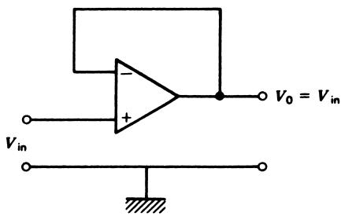
- Output directly fed back to inverting input (−)
- Input applied to noninverting input (+)
Ideal behavior:
- \(V_{\text{out}} = V_{\text{in}}\) (unity gain)
- Very high input impedance (often > 100 MΩ)
- Very low output impedance (< 100 Ω)
Use case: Impedance transformer
- Take a high‑impedance signal source (e.g., sensor, divider)
- Deliver same voltage to a low‑impedance load without loading the sensor
5.2 Inverting Amplifier & Summing Amplifier
Recall:
\[ V_{\text{out}} = -\frac{R_2}{R_1} V_{\text{in}} \tag{31} \]
Summing Amplifier (two inputs example, Figure 31):
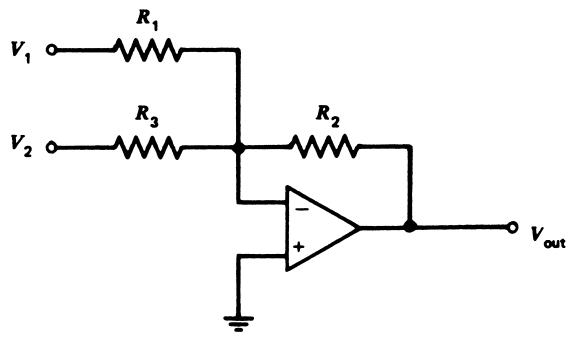
Transfer function:
\[ V_{\text{out}} = -\left[ \frac{R_2}{R_1} V_1 + \frac{R_2}{R_3} V_2 \right] \tag{34} \]
Special cases:
- \(R_1 = R_2 = R_3\) → \(V_{\text{out}} = -(V_1 + V_2)\) (inverted sum)
- Other resistor choices provide weighted sums or averages
Note
Summing amplifiers are useful for:
- Adding a DC offset (bias) to a signal
- Mixing multiple sensor signals
- Implementing simple DACs (weighted binary inputs)
Example: Implementing ( V_{} = 3.4V_{} + 5 )
Strategy (as described in text):
- Use a summing amplifier with two inputs: \(V_{\text{in}}\) and a fixed 5 V.
- Gains chosen so output after the summing stage is \(-(3.4V_{\text{in}} + 5)\).
- Follow with an inverting amplifier of gain −1 to remove the sign.
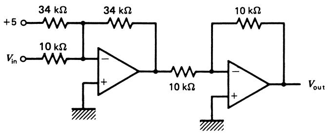
Resistor selection uses the same “mA and kΩ” philosophy.
5.3 Noninverting Amplifier
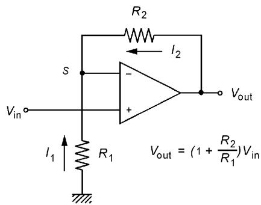
- Input \(V_{\text{in}}\) applied to noninverting (+) input
- Feedback and reference resistors \(R_2\) and \(R_1\) form a divider from \(V_{\text{out}}\) to ground
- Summing point at inverting input has voltage \(V_S\)
KCL at node S and ideal equality \(V_- = V_+ = V_{\text{in}}\):
\[ \frac{V_{\text{in}}}{R_1} + \frac{V_{\text{in}} - V_{\text{out}}}{R_2} = 0 \]
Solving:
\[ V_{\text{out}} = \left[1 + \frac{R_2}{R_1}\right] V_{\text{in}} \tag{35} \]
- Gain ≥ 1, cannot attenuate
- Input impedance: very high (≈ op amp input Z)
- Output impedance: low
Tip
Use noninverting amplifiers when you need high input impedance and positive gain (no phase inversion).
Example: Noninverting Gain of 42
Design a high‑impedance amplifier with voltage gain 42.
We use:
\[ V_{\text{out}} = \left[1 + \frac{R_2}{R_1}\right] V_{\text{in}} \]
So
\[ 42 = 1 + \frac{R_2}{R_1} \Rightarrow R_2 = 41 R_1 \]
Choose \(R_1 = 1\,\text{k}\Omega\), then \(R_2 = 41\,\text{k}\Omega\).
- Input impedance ≈ op amp input impedance (>> MΩ).
5.4 Differential Amplifier – Core Concept
Goal: Amplify the difference between two voltages while rejecting any common‑mode voltage.
Ideal relationship:
\[ V_{\text{out}} = A (V_a - V_b) \tag{36} \]
Common‑mode input voltage:
\[ V_{cm} = \frac{V_a + V_b}{2} \tag{37} \]
Common‑mode rejection ratio (CMRR):
\[ \text{CMRR} = \frac{A}{A_{cm}} \tag{38} \]
Common‑mode rejection (CMR) in dB:
\[ \text{CMR} = 20 \log_{10}(\text{CMRR}) \tag{39} \]
Typical CMR for instrumentation amplifiers: 60–100 dB.
Important
High CMR is critical when your sensor signal is small but rides on a large common‑mode voltage (e.g., Wheatstone bridge outputs, biomedical electrodes, strain gauges).
Differential Amplifier Circuit
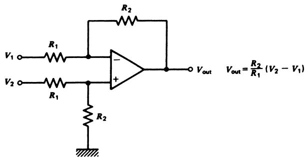
- Requires two pairs of matched resistors: \(R_1\) and \(R_2\) on each side
- Ideal transfer function (Appendix 6 derivation):
\[ V_{\text{out}} = \frac{R_2}{R_1} (V_2 - V_1) \tag{40} \]
Notes:
- Resistor matching quality strongly affects CMR.
- Input impedances are not very high and not equal between inputs.
- For instrumentation, we often add input buffers to make input impedance high and symmetric.
Instrumentation Amplifier – Buffered Differential Amp

- Add voltage followers (buffers) before differential stage:
- Greatly increases input impedance (ideal for sensor bridges).
- Input loading becomes negligible.
- Transfer function remains:
\[ V_{\text{out}} = \frac{R_2}{R_1} (V_2 - V_1) \tag{40 again} \]
Disadvantage:
- Changing gain requires changing both \(R_1\) resistors and keeping them matched.
Example 20 – Sensor 20–250 mV → 0–5 V
Sensor: \(V_{\text{in}}\) from 20 mV to 250 mV. Desired: \(V_{\text{out}}\) from 0 to 5 V, very high input impedance.
Model: linear relationship
\[ V_{\text{out}} = m V_{\text{in}} + V_0 \]
Use two points:
\[ \begin{aligned} 0 &= m(0.020) + V_0 \\ 5 &= m(0.250) + V_0 \end{aligned} \]
Solve:
- \(V_0 = -0.434\) V
- \(m = 21.7\)
So:
\[ V_{\text{out}} = 21.7 V_{\text{in}} - 0.434 \]
Alternative form:
\[ V_{\text{out}} = 21.7(V_{\text{in}} - 0.02) \]
This looks like:
- Differential amplifier with gain 21.7
- Fixed 0.02 V offset applied to inverting input

Instrumentation Amplifier with Single Gain Resistor
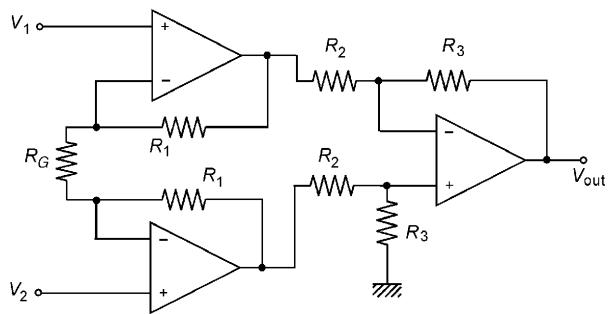
- Two input stages: noninverting amplifiers with shared gain‑setting resistor \(R_G\)
- Third stage: differential amplifier with resistors \(R_2\) and \(R_3\)
Transfer function:
\[ V_{\text{out}} = \left(1 + \frac{2R_1}{R_G}\right)\left(\frac{R_3}{R_2}\right)(V_2 - V_1) \tag{41} \]
Advantages:
- Gain adjusted by single resistor \(R_G\)
- High input impedance
- High CMR, mainly dependent on matching of \(R_2\) and \(R_3\)
Many IC instrumentation amplifiers (e.g., AD620, INA128) use this topology.
Example 21 – Instrumenting a Wheatstone Bridge
Bridge (Figure 38): \(R_4\) varies from 100 Ω to 102 Ω.
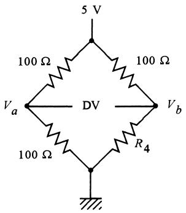
Bridge voltage: \(V_a - V_b = \Delta V\).
At \(R_4 = 102\,\Omega\) and \(R_1 = R_2 = R_3 = 100\,\Omega\), supply = 5 V:
\[ \Delta V = 5\left[\frac{100}{100+100} - \frac{102}{100+102}\right] = -24.75\text{ mV} \]
Need: \(V_{\text{out}} = 0\) V at 100 Ω, \(V_{\text{out}} = 2.5\) V at 102 Ω.
So differential gain:
\[ A = \frac{2.5\text{ V}}{24.75\text{ mV}} \approx 101 \]
Using Eq. (41) with \(R_2 = R_3 = 1\text{ k}\Omega\), \(R_1 = 100\text{ k}\Omega\):
\[ 101 = \left(1 + \frac{2 \cdot 100{,}000}{R_G}\right)\left(\frac{1000}{1000}\right) \]
Solve for \(R_G\):
\[ R_G = 2000\,\Omega \]
Polarity: connect bridge nodes such that \(V_b\) goes to the input that yields positive output as \(R_4\) increases.
5.5 Voltage‑to‑Current Converter
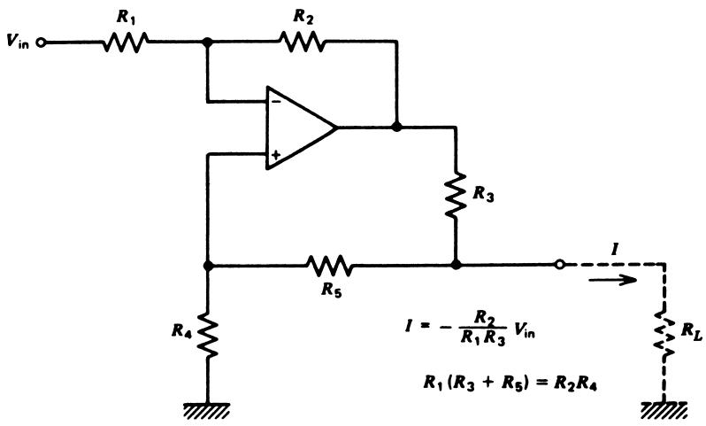
Used to drive 4–20 mA current loops from a voltage signal.
Transfer function (Appendix 6):
\[ I = -\frac{R_2}{R_1 R_3} V_{\text{in}} \tag{42} \]
Condition on resistors:
\[ R_1(R_3 + R_5) = R_2 R_4 \tag{43} \]
Maximum load resistance \(R_{ml}\) before saturation:
\[ R_{ml} = \frac{(R_4 + R_5)\left[\dfrac{V_{\text{sat}}}{I_m} - R_3\right]}{R_3 + R_4 + R_5} \tag{44} \]
- \(I_m\) is maximum desired output current
- \(V_{\text{sat}}\) is op amp saturation voltage
Note
In instrumentation, current loops are robust to long cable runs and noise, so V–I converters are used at the transmitter end to convert local sensor voltage to a standardized current signal.
Example 22 – 0–1 V to 0–10 mA Converter
Requirements:
- Input: 0–1 V signal
- Output: 0–10 mA current
- Op amp saturation: ±10 V
Strategy:
The V–I converter inverts (negative sign in Eq. 42), so we first invert the 0–1 V to 0 to −1 V with a simple inverting amplifier.
Choose \(R_1 = R_2\) in the V–I converter:
Then Eq. (42) becomes: \[ I = -\frac{R_2}{R_1 R_3}V_{\text{in}} = -\frac{1}{R_3}V_{\text{in}} \]
For 10 mA at 1 V (actually −1 V at the converter input):
\[ R_3 = \frac{1\text{ V}}{10\text{ mA}} = 100\,\Omega \]
Choose \(R_5 = 0\) so Eq. (43) simplifies to \(R_1 R_3 = R_2 R_4\). With \(R_1=R_2\), we get \(R_3 = R_4 = 100\,\Omega\).
Maximum load resistance (Eq. 44):
\[ R_{ml} = 100\left[\frac{10\text{ V}}{10\text{ mA}} - 100\right] / 200 = 450\,\Omega \]
So the loop can drive up to 10 mA into a 450 Ω load.
5.6 Current‑to‑Voltage Converter
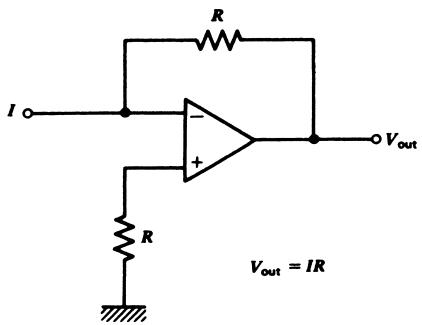
At the receiving end of a current loop, convert current back to a voltage:
- Sensor loop current \(I\) flows into the summing node through \(R\).
- Op amp adjusts \(V_{\text{out}}\) to keep input node at virtual ground.
Transfer function:
\[ V_{\text{out}} = -I R \tag{45} \]
- Very linear as long as op amp does not saturate
- Choose \(R\) so that max current yields desired output range
5.7 Integrator
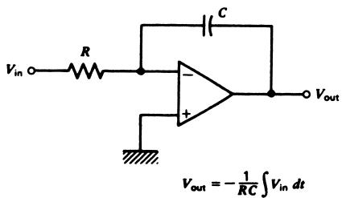
- Input resistor \(R\)
- Feedback capacitor \(C\)
Summing node equation (ideal op amp):
\[ \frac{V_{\text{in}}}{R} + C\frac{dV_{\text{out}}}{dt} = 0 \tag{46} \]
Integrate both sides:
\[ V_{\text{out}} = -\frac{1}{RC} \int V_{\text{in}}\,dt \tag{47} \]
If \(V_{\text{in}}\) is a constant \(K\):
\[ V_{\text{out}} = -\frac{K}{RC} t \tag{48} \]
→ Ideal ramp generator with slope \(-K/(RC)\).
Caution
In practice, integrators need reset/clamp circuits and often a resistor in parallel with \(C\) to prevent drift and saturation from DC offsets.
Example 23 – 10 V/ms Ramp
Goal: ramp increasing at 10 V/ms.
Desired:
\[ \frac{dV_{\text{out}}}{dt} = 10\text{ V/ms} \]
Use integrator:
\[ V_{\text{out}} = -\frac{V_{\text{in}}}{RC} t \]
Let \(RC = 1\) ms and \(V_{\text{in}} = -10\) V. Then:
\[ V_{\text{out}} = -\frac{-10}{1\text{ ms}} t = 10\frac{\text{V}}{\text{ms}}t \]
Example component choices:
- \(R = 1\,\text{k}\Omega\), \(C = 1\,\mu\text{F}\) → \(RC = 1\) ms
5.8 Differentiator
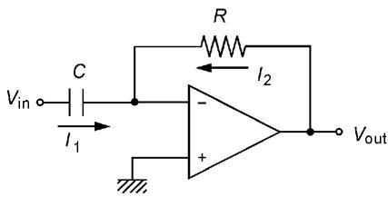
- Capacitor in series at input, resistor in feedback
Summing node equation:
\[ C\frac{dV_{\text{in}}}{dt} + \frac{V_{\text{out}}}{R} = 0 \tag{49} \]
Solve for \(V_{\text{out}}\):
\[ V_{\text{out}} = -RC\frac{dV_{\text{in}}}{dt} \tag{50} \]
So output is proportional to the time derivative of \(V_{\text{in}}\).
Warning
Real differentiators tend to be noisy and unstable: they amplify high‑frequency noise and any fast transients. They are typically used only as part of more complex, bandwidth‑limited circuits.
5.9 Op Amp Linearization & Nonlinear Circuits
Idea: place a nonlinear element in the feedback loop of an op amp.
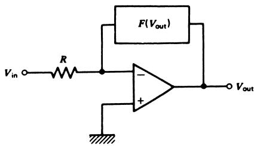
Summing point equation:
\[ \frac{V_{\text{in}}}{R} + I(V_{\text{out}}) = 0 \tag{51} \]
Solve for \(V_{\text{out}}\):
\[ V_{\text{out}} = G\left(\frac{V_{\text{in}}}{R}\right) \tag{52} \]
Where \(G\) is related to the inverse of \(I(V_{\text{out}})\).
Example: diode in feedback → logarithmic amplifier.
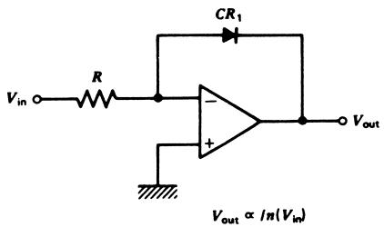
Diode equation:
\[ I(V_{\text{out}}) = I_0 \exp(\alpha V_{\text{out}}) \tag{53} \]
Substituting and inverting:
\[ V_{\text{out}} = \frac{1}{\alpha}\ln(V_{\text{in}}) - \frac{1}{\alpha}\ln(I_0 R) \tag{54} \]
→ Output is logarithmic in input.
6. Design Guidelines for Analog Signal Conditioning
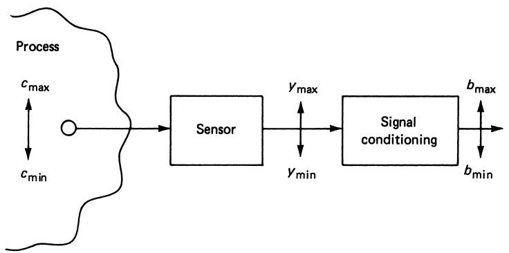
General workflow:
- Define the measurement objective
- Select the sensor (if not fixed)
- Design the analog S/C block
- Check accuracy, loading, noise, and practical constraints
We’ll summarize each step as a design checklist.
Step 1 – Define the Measurement Objective
- Parameter
- What are we measuring? Temperature, pressure, flow, position, voltage, current…
- Range
- Min/max of the physical variable: e.g., 100–200 °C, 45–85 psi.
- Accuracy
- Required error bounds: e.g., ±5% full scale (FS), ±3% of reading.
- Linearity
- Must the mapping from parameter to output be linear?
- Noise environment
- Expected interference (EMI), frequency content, and noise levels.
Tip
Clearly stating these before drawing circuits avoids under‑ or over‑design (e.g., using an ultra‑precision amp when 5% error is acceptable).
Step 2 – Understand / Select the Sensor
If the sensor is given, document its characteristics; if not, choose an appropriate one.
- Output parameter
- Does the sensor produce resistance, voltage, current, frequency, etc.?
- Transfer function
- Relationship between input (physical) and output (electrical).
- Linear? Nonlinear? Given by equation or table?
- Time response
- First‑order time constant, 2nd‑order dynamics, bandwidth.
- Range
- Range of sensor output over measurement range.
- Power limits
- Max dissipation, max current/voltage, self‑heating constraints.
Step 3 – Design the Analog Signal Conditioning
- Desired output parameter
- Usually a voltage for ADCs (e.g., 0–5 V, ±10 V).
- Sometimes current (4–20 mA) or frequency.
- Output range
- Ensure mapping covers full ADC input range for better resolution.
- Input impedance of S/C
- Must not excessively load sensor or bridge.
- Output impedance of S/C
- Must be low enough for the next stage (ADC, recorder, actuator driver).
Note
For voltage‑output sensors, high input impedance is often crucial. For bridge‑based sensors, design excitation and bridge resistances to respect sensor power limits and linearity.
Step 4 – Additional Analog S/C Design Notes
- If input is a resistance change (e.g., RTD, strain gauge):
- Design the bridge/divider carefully:
- Check nonlinearity of bridge output vs. resistance.
- Verify sensor self‑heating power is within limits.
- For the op amp section:
- Start with a static transfer function (equation, straight line).
- Then choose topologies (inverting, noninverting, summing, differential).
- Always verify loading effects:
- Does S/C input load the sensor?
- Does S/C output properly drive the load/ADC?
Example 24 – −2.4 to −1.1 V → 0 to 2.5 V
We only know we need a voltage‑to‑voltage conversion; sensor details are unknown.
- Good practice: assume high source impedance → design high input Z using a voltage follower.
Model:
\[ V_{\text{out}} = m V_{\text{in}} + V_0 \]
Using:
\[ \begin{aligned} 0 &= -2.4 m + V_0 \\ 2.5 &= -1.1 m + V_0 \end{aligned} \]
From first: \(V_0 = 2.4m\). Sub into second:
\[ 2.5 = -1.1 m + 2.4 m = 1.3 m \Rightarrow m = 1.923 \]
Then \(V_0 = 4.615\) V, so:
\[ V_{\text{out}} = 1.923 V_{\text{in}} + 4.615 \]
One implementation (Figure 46):
- Input buffer (voltage follower) → high input Z
- Summing amplifier → implements \(1.923 V_{\text{in}} + 4.615\) (but inverted)
- Inverting amplifier → flips sign back
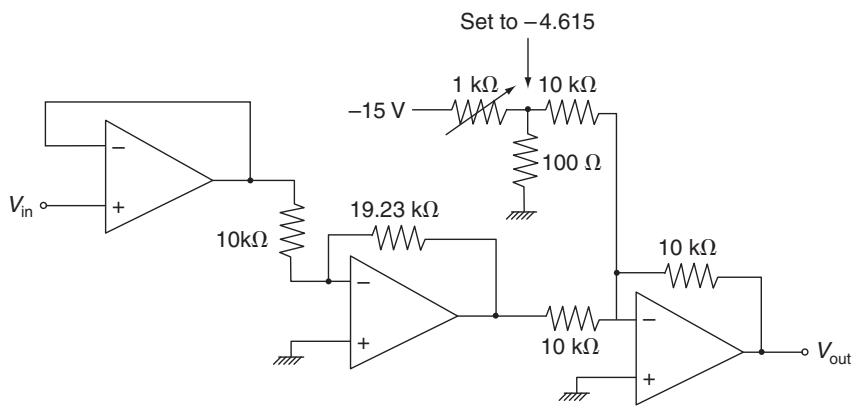
Example 25 – Temperature Measurement System
Given:
- Temperature range: 250–450 °C
- Accuracy: ±2 °C
- Sensor: resistance varies linearly from 280 Ω to 1060 Ω over that range
- Max sensor power: 5 mW
- Desired output: −5 to +5 V, linear
- Load: high‑impedance recorder
Step 1 – Limit Sensor Power
Power:
\[ P = I^2 R \]
At maximum resistance (1060 Ω), limiting case:
\[ I_{\max} = \sqrt{\frac{0.005}{1060}} \approx 2.17\text{ mA} \]
So design such that sensor current always < 2 mA.
Step 2 – Transfer Function
Relate \(V_{\text{out}}\) to \(R_s\).
Model:
\[ V_{\text{out}} = m R_s + V_0 \]
Two conditions:
\[ \begin{aligned} -5 &= 280m + V_0 \\ +5 &= 1060m + V_0 \end{aligned} \]
Subtract:
\[ 10 = 780m \Rightarrow m = 0.0128 \]
Then:
\[ V_0 = -5 - 280(0.0128) = -8.58 \]
So:
\[ V_{\text{out}} = 0.0128 R_s - 8.58 \]
Step 3 – Circuit Realization
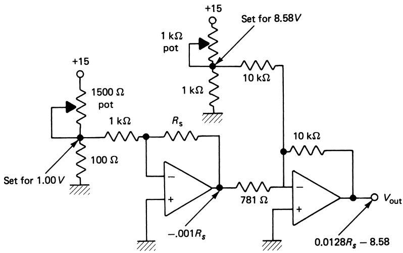
- Use an inverting amplifier with sensor \(R_s\) in feedback and a fixed input of 1 V through 1 kΩ → sensor current = 1 mA (< 2 mA).
- Follow with a second stage (inverting summer) to achieve the correct offset and sign.
- Trimmer resistors used to precisely set 1.00 V and 8.58 V biases.
Summary / Key Points
- Op amps are universal analog building blocks widely used in instrumentation.
- Ideal op amp analysis relies on:
- No input currents.
- Equal input voltages under negative feedback.
- Basic configurations:
- Voltage follower – buffer, unity gain, high input Z.
- Inverting amplifier – gain \(-R_2/R_1\), input Z ≈ \(R_1\).
- Noninverting amplifier – gain \(1 + R_2/R_1\), high input Z.
- Summing amplifier – weighted sum and DC offset.
- Real op amps have finite:
- Gain, bandwidth, slew rate, and nonzero offsets and bias currents.
- Instrumentation amplifiers provide:
- High input Z, adjustable gain, and high common‑mode rejection.
- Ideal for bridge and low‑level sensor signals.
- V–I and I–V converters implement standardized current loops.
- Integrators and differentiators implement time‑domain operations (with practical stability considerations).
- Good design practice:
- Work from equations first.
- Consider loading, power limits, and noise.
- “Think mA and kΩ” for op amp resistor values.
Formula Summary
Ideal Inverting Amplifier
\[ V_{\text{out}} = -\frac{R_2}{R_1} V_{\text{in}} \tag{31} \]
Noninverting Amplifier
\[ V_{\text{out}} = \left[1 + \frac{R_2}{R_1}\right] V_{\text{in}} \tag{35} \]
Summing Amplifier (two inputs)
\[ V_{\text{out}} = -\left[ \frac{R_2}{R_1} V_1 + \frac{R_2}{R_3} V_2 \right] \tag{34} \]
Differential Amplifier / Basic Instrumentation Amp
\[ V_{\text{out}} = \frac{R_2}{R_1} (V_2 - V_1) \tag{40} \]
3‑Op‑Amp Instrumentation Amplifier
\[ V_{\text{out}} = \left(1 + \frac{2R_1}{R_G}\right)\left(\frac{R_3}{R_2}\right)(V_2 - V_1) \tag{41} \]
Formula Summary (cont.)
Voltage‑to‑Current Converter
\[ I = -\frac{R_2}{R_1 R_3} V_{\text{in}} \tag{42} \]
Resistor condition:
\[ R_1 (R_3 + R_5) = R_2 R_4 \tag{43} \]
Maximum load resistance:
\[ R_{ml} = \frac{(R_4 + R_5)\left[\dfrac{V_{\text{sat}}}{I_m} - R_3\right]}{R_3 + R_4 + R_5} \tag{44} \]
Current‑to‑Voltage Converter
\[ V_{\text{out}} = -I R \tag{45} \]
Integrator
\[ V_{\text{out}} = -\frac{1}{RC} \int V_{\text{in}}\,dt \tag{47} \]
Differentiator
\[ V_{\text{out}} = -RC \frac{dV_{\text{in}}}{dt} \tag{50} \]
Logarithmic Amplifier (diode feedback)
\[ V_{\text{out}} = \frac{1}{\alpha}\ln(V_{\text{in}}) - \frac{1}{\alpha}\ln(I_0 R) \tag{54} \]